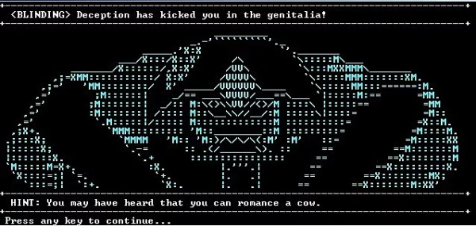

Arch Linux repository
Repository with builded packages for Arch GNU/Linux and pacman based distros. In /etc/pacman.conf
[repo.mksscryertower.quest] Server = https://repo.mksscryertower.quest/repo/x86_64/
Then run, from root
pacman-key --recv-keys 8A36037D80912162 pacman-key --lsign-key 8A36037D80912162 pacman -Syyu
Pages
Artificial human life = existence
Crimes with brain scanners, human detectors, other devices and me
Slavery in piracy groups, criminal groups and in cults
Radio frequency attacks from user side (WIP)
- The freedom of one ends where the freedom of another begins.
- The ends do not justify the means.
- Freedom of association and disassociation.